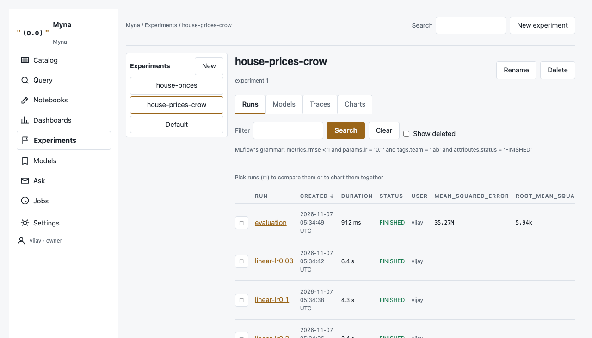
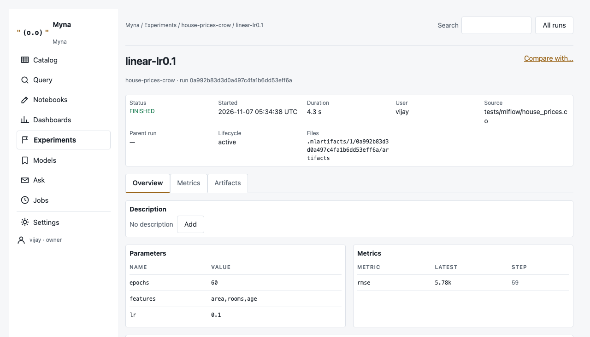
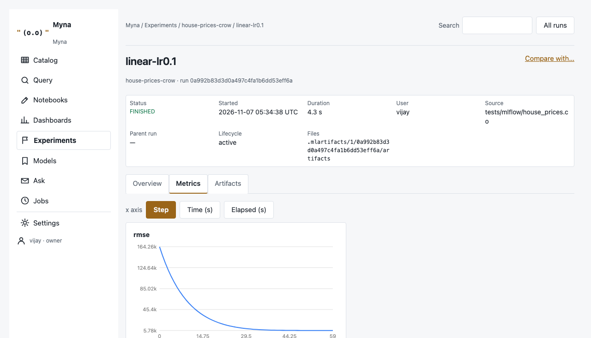
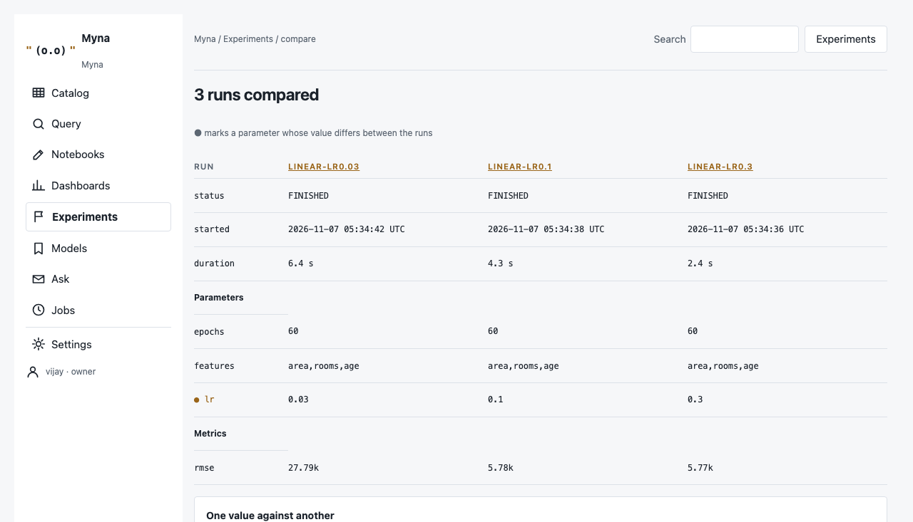
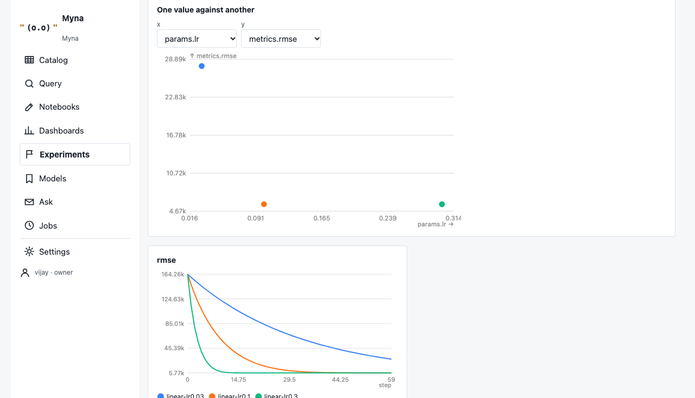
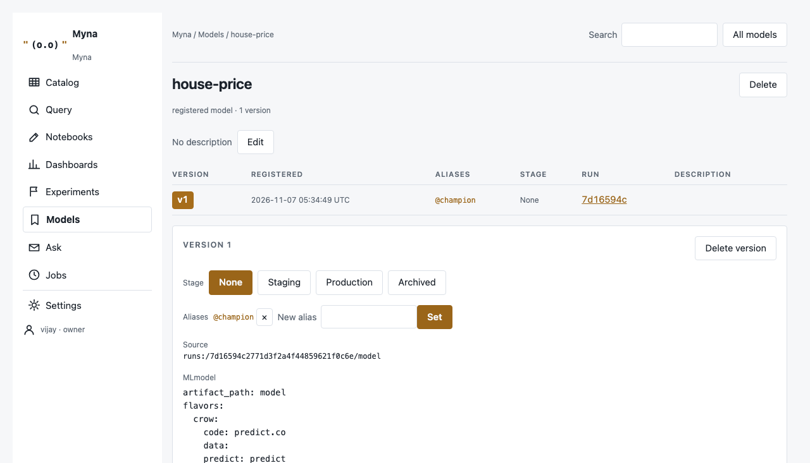
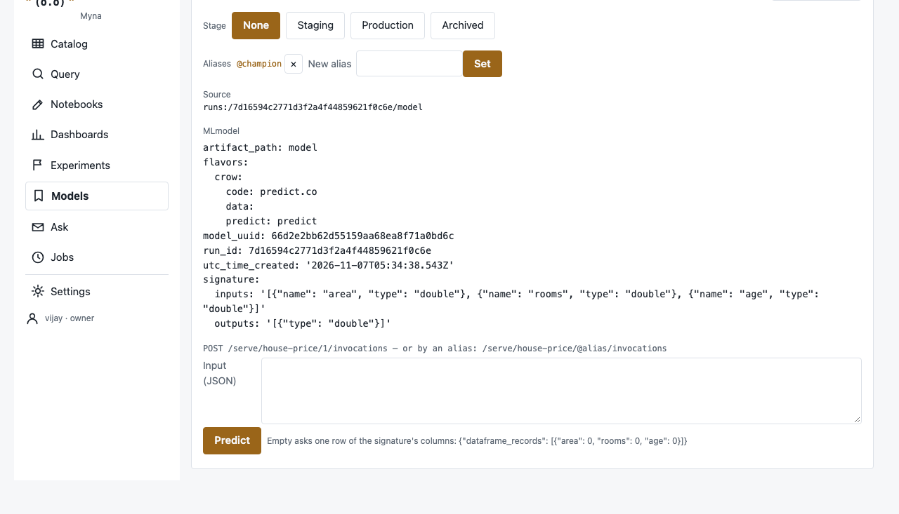

Introducing Myna: a data and machine-learning workbench written in Crow
Notebooks, queries, dashboards, experiments and models over one folder of Magpie logs
A team that works with data usually keeps its work in several places: a catalog of tables, notebooks, saved queries and dashboards, a tracking server for experiments, a registry of models, and a scheduler that runs it all.
Each of those keeps its own records in its own store, and the team keeps them in step.
Myna keeps all of it in one folder of Magpie logs. The notebooks' tables, the saved queries, the dashboards' tiles, every run of every experiment and every version of every model are rows of logs side by side. Every page is derived from those logs.
Myna is written entirely in Crow, and its pages are Crow views, so there is no Python, no JavaScript framework and no second database. Its experiments and models do what MLflow does and answer MLflow's own Python client.
The idea
What Myna holds, and where.
One folder, every page
Everything Myna keeps is in one folder, the workspace. Each piece is a Magpie log. A change is a new row, and a read takes the latest row per key, so nothing is edited in place and the history of every record is kept.
| Page | What it keeps | Log |
|---|---|---|
| Notebooks | every version of every cell, every run and its output | _notebooks, _runs |
| Query, Dashboards | saved queries, dashboards and their tiles | _queries, _dashboards, _tiles |
| Jobs | the notebooks' schedules | _schedules |
| Experiments, Models | experiments, runs, params, metrics, tags, datasets, models, versions, aliases, traces | _ml_*, and files in .mlartifacts/ |
| Catalog | the tables the notebooks write | any other name |
A notebook's table and an experiment's metrics are the same kind of thing, a log, so the Catalog lists one beside the other, and a dashboard can chart either.
The workbench
The pages that hold a team's data work, from a question to a schedule.
Notebooks
A notebook is a list of cells of Crow. A run takes the cells top to bottom as one program, run by the installed crow in the workspace's folder. A name one cell sets is there in the next, and a table a cell writes is a Magpie log beside the others.
Each cell shows its output, its status and its time. A stop or a refusal appears under the cell it names, and the cells after it are skipped. Every save is a version and every run is kept with its output, so History can open an old run or restore an old version.
Query, the catalog and dashboards
The Catalog lists the tables with their columns and latest rows. The Query page asks one of Magpie's reading verbs of a table as a form: the latest rows, a summary grouped by columns, or a search of a text column. A saved query can be opened as the first cell of a new notebook, or pinned to a dashboard.
A dashboard sets saved queries side by side as tiles of bars, a number or a table. Each tile's answer is kept as a Parquet file, so a dashboard opens without asking its queries again. One given an interval is refreshed by the scheduler.
Jobs
The scheduler is a Crow program of its own. Every fifteen seconds it runs the notebooks that are due and refreshes the dashboards that are due, recording each run. The Jobs page starts it and lists the schedules and their runs.
Experiments and models
MLflow's tracking and registry, in the order work happens: a run is logged, runs are compared, the best is registered, served and evaluated. The screenshots below are of compiled Myna holding the sample that tests/mlflow/house_prices.co makes: a linear model of 200 made-up houses, fitted at three learning rates.
Logging a run
A notebook cell logs into a run with a few calls. The run then appears on the Experiments page:
use myna.tracking
tracking.ready[]
run = tracking.start_run['house-prices', 'linear-lr0.1']
p = tracking.log_params[run, map[lr = '0.1', epochs = '60']]
for step in range[60]
m = tracking.log_metric[run, 'rmse', 1000.0 / (step + 1), step]
done = tracking.end_run[run, 'FINISHED']Each call answers what it wrote, or why not. Crow does not let a value that can fail be dropped, so a failed write stops the cell instead of passing unseen.

metrics.rmse < 6000 and params.lr = '0.3'.

Comparing runs
Compare sets runs side by side and marks with ● every parameter whose value differs. It plots any value against another, and draws each metric with a line per run.


Registering and serving a model
A model is a folder of files: an MLmodel file in MLflow's format, naming the flavor crow and the input and output columns, and predict.co, which answers one prediction per row. The best run's model is registered as house-price, given the alias champion, and evaluated on the held-out rows with scikit-learn's definitions of the scores.
A version is served at /serve/:model/:ref/invocations and takes any of MLflow's input forms. Each request runs the model in a scratch copy of its folder, under a time limit, so a slow or failing model cannot stop the workbench. The model page's Try it box sends the same request.


MLmodel, and the box that asks it for predictions.MLflow's own client
Myna answers MLflow's HTTP protocol: experiments, runs, metrics and their history, tags, logged models, the registry with aliases and stages, and traces with their feedback. So MLflow's Python client works against it after mlflow.set_tracking_uri('http://localhost:3800'). Errors take MLflow's form, such as RESOURCE_DOES_NOT_EXIST with status 404. The client is how Myna is tested, not something it depends on.
MLflow's known bugs
Before the store was written, MLflow's issue tracker was read for bugs in the parts Myna rebuilds, and each one that applies is ruled out by the design. A few of them:
- A step or a time of 0 is kept, not read as missing, and NaN is stored and shown as NaN.
- The latest value of a metric is the one at the greatest step, not the last row written.
- A search is parsed, never pasted into a query. Numbers compare as numbers, and paging has one stable order, so no run is seen twice or skipped.
- A registered model's rename moves its tags, aliases and versions; deleting a version removes its aliases.
- A file path with
.., an absolute path or a backslash is refused.
The book's chapter MLflow's Known Bugs lists all of them.
In practice
What was checked, what is left out, and where to get it.
How it is tested
Every part's tests run twice, interpreted and compiled, and Crow holds a program's answers to be the same in both. Two checks reach outside Myna:
| Check | What is compared | Result |
|---|---|---|
| MeasuredThe house-price model, in Crow and in Python | tests/mlflow/house_prices.co trains, registers, evaluates and serves the model in Myna. house_prices.py trains the same model in plain Python loops, adding in the same order, and compares: the features' centres and spreads, every run's weights and final error, and the three served predictions, for exact equality of the printed floats; scikit-learn's six scores within 1e-12, since numpy adds in another order. | Every number agrees, interpreted and compiled |
| MeasuredMLflow's own Python client against Myna | tests/mlflow/client_check.py drives a running Myna through experiments, runs, params, metric history, tags, search, artifacts, a scikit-learn model logged as files, the registry with versions, aliases, stages and tags, and deletes and restores. | 25 of 25 checks pass |
Building Myna found 31 bugs in Crow, the language, and each was fixed in Crow with a test that reproduces it before Myna went on.
What is not built
Everything is built in Crow, so the parts of MLflow that are integrations with Python frameworks or outside services are left out: the Python model flavors and autologging, cloud artifact stores, SQL backends, deployment targets, and judges that call outside models. Myna has its own flavor, its own serving and its own scores in their place.
Some Crow work is still to do. The artifact proxy, which a client on another machine needs, is missing. So are projects, a classifier's log loss and confusion matrix, image and table previews among a run's files, and a model kept warm between requests: today each request starts the model again, about a second per call. On the workbench, the page for asking a model questions is not built yet. The book's Not Built chapter lists each item with its reason.
Availability
Crow is open source at github.com/agncrow/crow. Myna is built on Magpie.
Myna's source is private for now. Its license is the Business Source License 1.1, as Magpie's is: free for development, testing and non-commercial use, and for commercial production on one machine per application, with each version becoming Apache-2.0 four years after it is published. The licensing page says this in plain words.
The Myna book walks through every page, the calls a notebook makes, MLflow's HTTP API, serving and evaluation, and the tests: the book.
Myna's idea is that a team's data work can live in one folder: tables, questions, dashboards, experiments and models side by side as logs, with every page derived from them.